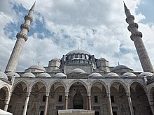

Based around Söğüt, Ottoman Beylik was founded by Osman I in the early 14th century.[139] According to Ottoman chroniclers, Osman descended from the Kayı tribe of the Oghuz Turks.[140] Ottomans started annexing the nearby Turkish beyliks (principalities) in Anatolia and expanded into the Balkans.[141] Mehmed II completed Ottoman conquest of the Byzantine Empire by capturing its capital, Constantinople, on 29 May 1453.[142] Selim I united Anatolia under Ottoman rule.[23] Turkification continued as Ottomans mixed with various indigenous people in Anatolia and the Balkans.[140]
The Ottoman Empire was a global power during the reigns of Selim I and Suleiman the Magnificent.[23][24] In the 16th and 17th centuries, Sephardic Jews moved into Ottoman Empire following their expulsion from Spain.[143] From the second half of the 18th century onwards, the Ottoman Empire began to decline. The Tanzimat reforms, initiated by Mahmud II in 1839, aimed to modernize the Ottoman state in line with the progress that had been made in Western Europe. The Ottoman constitution of 1876 was the first among Muslim states, but was short-lived.[144]
As the empire gradually shrank in size, military power and wealth; especially after the Ottoman economic crisis and default in 1875[145] which led to uprisings in the Balkan provinces that culminated in the Russo-Turkish War (1877–1878); many Balkan Muslims migrated to the empire's heartland in Anatolia,[146][147] along with the Circassians fleeing the Russian conquest of the Caucasus. According to some estimates, 800,000 Muslim Circassians died during the Circassian genocide in the territory of present-day Russia, the survivors of which sought refuge in the Ottoman Empire, mostly settling in the provinces of present-day Turkey. The decline of the Ottoman Empire led to a rise in nationalist sentiment among its various subject peoples, leading to increased ethnic tensions which occasionally burst into violence, such as the Hamidian massacres of Armenians, which claimed up to 300,000 lives.[148]
Ottoman territories in Europe (Rumelia) were lost in the First Balkan War (1912–1913).[149] Ottomans managed to recover some territory in Europe, such as Edirne, in the Second Balkan War (1913). In the 19th and early 20th centuries, persecution of Muslims during the Ottoman contraction and in the Russian Empire resulted in estimated 5 million deaths,[150][151] with more than 3 million in Balkans;[152] the casualties included Turks.[151] Five to seven or seven to nine million refugees migrated into modern-day Turkey from the Balkans, Caucasus, Crimea, and Mediterranean islands,[153] shifting the center of the Ottoman Empire to Anatolia.[154] In addition to a small number of Jews, the refugees were overwhelmingly Muslim; they were both Turkish and non-Turkish people, such as Circassians and Crimean Tatars.[155][156] Paul Mojzes has called the Balkan Wars an "unrecognized genocide", where multiple sides were both victims and perpetrators.[157]
Following the 1913 coup d'état, the Three Pashas took control of the Ottoman government. The Ottoman Empire entered World War I on the side of the Central Powers and was ultimately defeated. During the war, the empire's Armenian subjects were deported to Syria as part of the Armenian genocide. As a result, an estimated 600,000[160] to more than 1 million,[160] or up to 1.5 million[161][162][163] Armenians were killed. The Turkish government has refused to acknowledge[28][164] the events as genocide and states that Armenians were only "relocated" from the eastern war zone.[165] Genocidal campaigns were also committed against the empire's other minority groups such as the Assyrians and Greeks.[166][167][168] Following the Armistice of Mudros in 1918, the victorious Allied Powers sought the partition of the Ottoman Empire through the 1920 Treaty of Sèvres.[169]